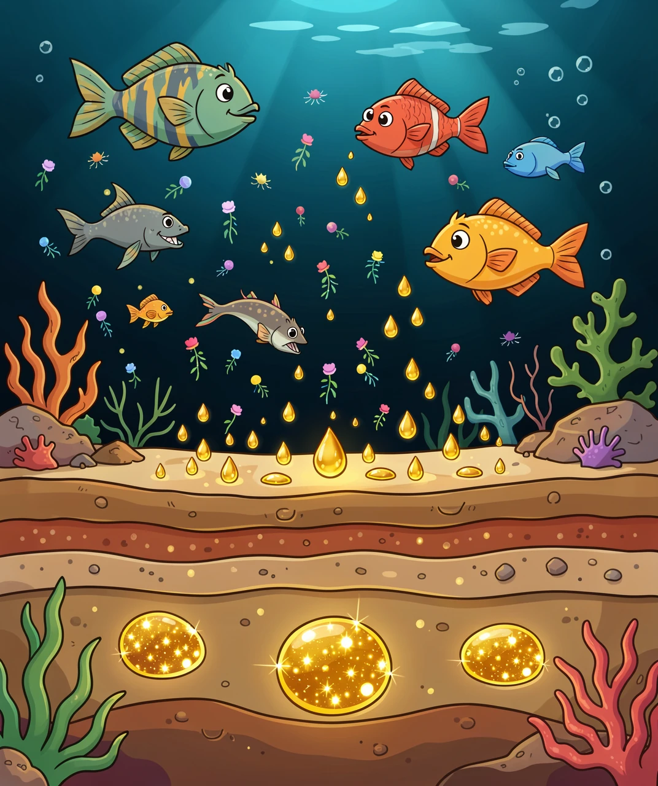
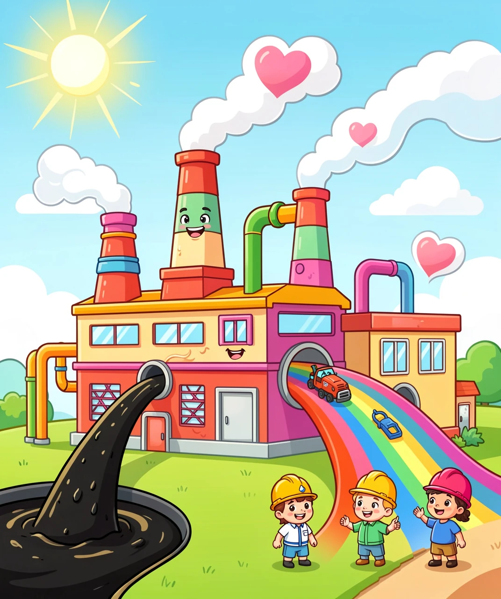
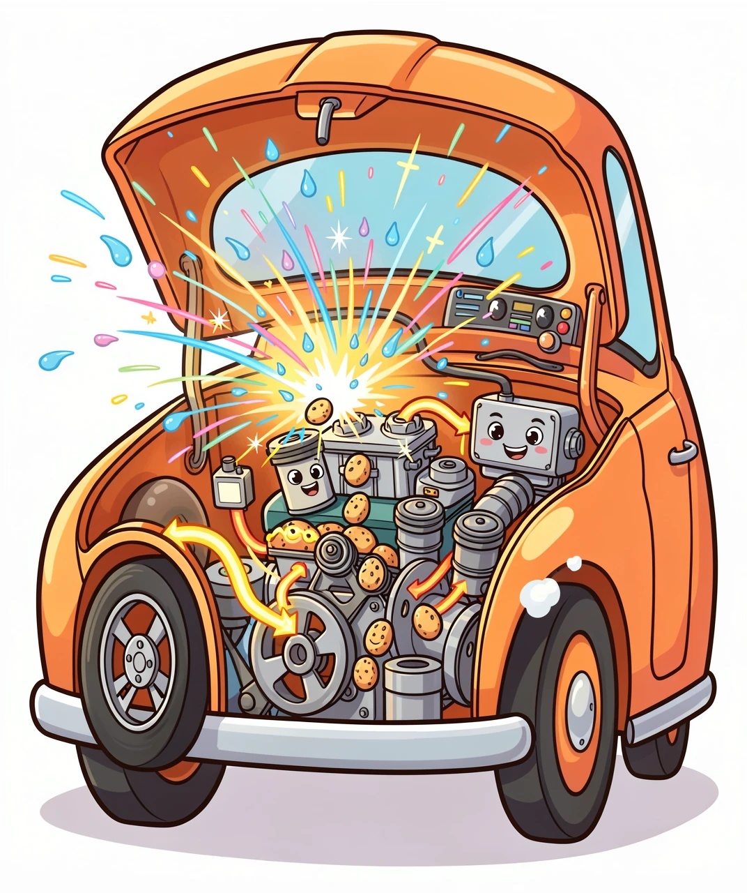
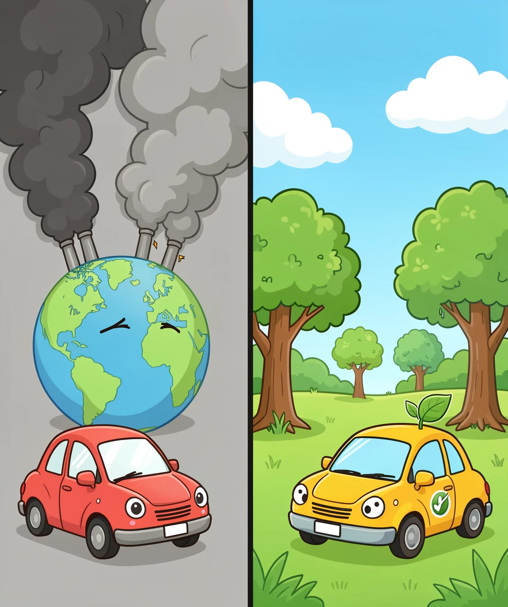
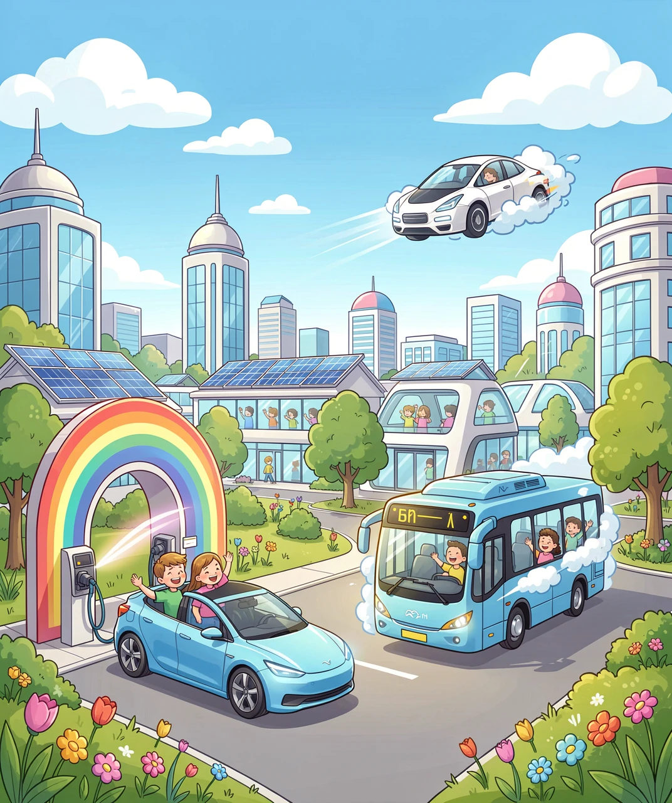

从地下到车轮：石油、汽油和汽车的奇妙故事
🚗 每天，爸爸妈妈开车送你上学，坐公交车去公园，或者一家人自驾游……你有没有想过：汽车为什么能跑？让车轮转起来的"能量"从哪里来？
答案藏在地底深处——一种叫做「石油」的黑色液体里！今天，我们就来揭开石油的秘密，看看它是怎么从遥远的地下，变成推动汽车前进的"魔法药水"——汽油！
如果你以为石油就是"石头里的油"，那你就只猜对了一半！石油其实是一份来自远古的礼物——它是几千万甚至几亿年前死去的生物变成的！
在恐龙时代之前，地球上覆盖着广阔的海洋。海洋里有数不清的浮游生物、藻类和小鱼。它们死后，尸体沉到海底，被泥沙一层层埋了起来。
在巨大的压力和地底的高温下，经过几百万年到几千万年的"慢炖"，这些生物遗骸慢慢变成了黑色的液体——石油！所以每一滴汽油里，都装着一份远古生命的"遗产"！
很多人以为石油是恐龙变的——其实不对哦！石油主要来自更小的生物：海洋浮游生物和藻类。恐龙的贡献几乎可以忽略不计。不过，"化石燃料"这个名字倒是很形象：烧石油，就像在烧化石！

🦠 远古海洋里的小生物，经过亿万年变成了今天的石油！
石油通常藏在地下几百米到几千米的岩层缝隙里，就像海绵吸水一样。人们用巨大的钻头钻到地底，把石油"抽"上来——这就是我们常说的"油田"和"钻井平台"！
全世界每天要消耗大约1亿桶石油！如果把这些石油装进标准油桶排成一排，可以绕地球整整两圈！
从地底抽上来的石油叫"原油"，黑乎乎的、黏黏的，可不能直接加到汽车里哦！要想让石油变成汽油，它需要去一个神奇的地方——炼油厂。
炼油厂的秘密武器是一个叫做"分馏塔"的巨型铁塔。分馏塔的原理特别简单：加热原油，让它蒸发，然后不同成分在不同温度下凝结出来——就像煮一锅汤，水蒸气先飘出来，油花后飘出来！
分馏塔从上到下温度依次升高，不同的"馏分"就像洋葱的层：最顶层（30°C）出液化气（你家煤气灶用的）；往下（70°C）出汽油；再往下（200°C）出柴油（给大卡车用的）；最底层出沥青（铺马路的！）。

🏭 神奇的"分馏塔"把黑原油变成汽油、柴油、塑料……
除了汽油和柴油，石油还能变出好多东西：塑料、尼龙衣服、化妆品、药片的外壳、蜡笔、泡泡糖的胶基……甚至你正在看的手机屏幕，里面也有石油的成分！所以石油不仅是"汽车的粮食"，也是现代生活的"万金油"。
一桶原油（约159升）大概能炼出：72升汽油 + 34升柴油 + 15升航空煤油 + 其他产品，几乎一点都不会浪费！
现在我们有了汽油，但汽油本身不会让汽车动起来。它需要一个"舞台"来释放能量——这个舞台就是发动机！
汽车的发动机里，藏着一个个叫做"气缸"的小房间。大多数家用车有4个气缸，跑车可能有8个甚至12个！每个气缸里面，都在反复上演一场「四步舞」：
第一步·吸气：活塞往下走，把汽油雾和空气的混合物吸进来
第二步·压缩：活塞往上走，把混合气狠狠压紧
第三步·爆炸：火花塞"啪"地打出电火花，混合气瞬间爆炸燃烧！温度可达2000°C！
爆炸产生的巨大力量把活塞狠狠推下去——这一"推"，通过曲轴和连杆，变成了车轮的转动。这就是「内燃机」的秘密：用微小的爆炸来驱动汽车！
当你开车时，发动机每分钟要发生上千次微型爆炸！如果发动机转速是3000转/分钟，4缸发动机每秒就有100次爆炸——比鞭炮还热闹！这就是为什么发动机会那么烫、那么响。

⚡ 微型爆炸推着活塞上下运动，这就是汽车的力量来源！
有意思的是，汽油发动机的能量利用效率其实不太高——只有大约25%-30%的汽油能量真正用在了推动汽车上。剩下的70%去哪了？变成了热能——这就是为什么发动机盖摸起来总是烫烫的！
石油给人类带来了巨大的便利，但它也带来了三个大麻烦：
🌫️ 空气污染：汽油燃烧产生的尾气里，含有二氧化碳（CO₂）、一氧化碳（CO）、氮氧化物等有害物质。这些气体会让天空变灰（雾霾），还会让小朋友更容易咳嗽、过敏。
🌡️ 温室效应：二氧化碳是"温室气体"的大哥大——它像一层越来越厚的棉被，把地球裹起来，让热量散不出去。地球变暖导致冰盖融化、海平面上升、极端天气越来越多。
⏳ 资源有限：石油是"不可再生"资源——地球几亿年才攒下的"家底"，人类只用了一两百年就快用完啦！科学家预测，按照目前的消耗速度，已探明的石油储量大约还能用50年左右。
一辆普通家用车每年排放约4.6吨二氧化碳！一棵大树一年只能吸收约20公斤二氧化碳——也就是说，一辆车一年的排放，需要230棵树才能"消化"掉！

🌍 不清洁的能源让地球"发烧"，我们需要更好的选择！
还不止这些——海上石油泄漏会让海洋生物遭殃，石油开采可能破坏自然环境，甚至引发"石油战争"……所以，石油虽然好，但我们真的需要找更好的替代品！
好消息是，人类已经在努力寻找新能源，让汽车变得更清洁！未来的马路上，这些"绿色选手"会越来越多：
⚡ 纯电动汽车：这是目前最主流的方案！电动车不烧汽油，靠电池驱动电机。中国的比亚迪、美国的特斯拉，已经卖出了上千万辆电动车。而且，如果充电的电力来自太阳能、风能——那整个过程就是零排放！
💧 氢能源汽车：终极环保方案！氢气燃烧后产生的"尾气"是什么？纯水！喝一口都没问题（虽然不建议）。日本的丰田Mirai就是氢能源汽车，加一次氢气只需3分钟，能跑650公里。
🌿 生物燃料：用玉米、甘蔗、藻类制造的燃料。虽然也排放二氧化碳，但植物生长时会吸收同样多的二氧化碳——相当于"碳中和"，不额外增加温室气体！
截至2026年，中国的电动车保有量已经超过3000万辆，占全球的一半以上！很多城市已经开始把公交车、出租车全部换成电动的。北京、深圳的公交车已经是100%纯电动了！

🔋 电动、氢能、太阳能……未来的马路会更干净、更安静！
💡 小朋友能做什么？虽然你还不能开车，但你可以：出门多走路或骑自行车、提醒爸爸少开车多坐地铁、随手关灯节约能源、跟朋友分享今天学到的知识！每一个小小的举动，都是在给地球"降温"。
题目一：石油主要是什么变成的？
A. 恐龙的骨头
B. 远古海洋里的浮游生物和藻类
C. 地上的树木被埋
D. 火山喷出来的岩浆
答案：B. 海洋浮游生物和藻类！虽然恐龙的说法更酷，但石油主要来自更小的海洋生物～
题目二：炼油厂用什么方法把原油变成汽油？
A. 用锤子敲
B. 加热蒸发，不同温度凝结出不同产品
C. 放在冰箱里冻
D. 用磁铁吸
答案：B. 分馏！加热原油，汽油在约70°C先蒸发出来——就像煮汤时不同料在不同温度下出味！
题目三：汽油在发动机里怎么产生动力？
A. 慢慢燃烧加热
B. 微型爆炸推动活塞
C. 直接用汽油浸泡车轮
D. 用风扇吹
答案：B. 火花塞点燃汽油雾，微型爆炸推动活塞，变成车轮的旋转！
题目四：汽车尾气里哪种气体导致地球变暖？
A. 氧气 B. 氮气 C. 二氧化碳（CO₂） D. 水蒸气
答案：C. 二氧化碳！它像"棉被"一样裹住地球，让热量散不出去——这就是温室效应。
题目五：氢能源汽车最大的优点是什么？
A. 跑得比飞机快
B. 燃烧后只排放纯水，零污染
C. 不用加油也不用充电
D. 会飞
答案：B. 氢气+氧气=水！唯一的"尾气"是纯水，真正的零污染能源！
🏆 测试评分
答对5题：⛽⛽⛽⛽⛽ 你是石油知识小博士！
答对4题：⛽⛽⛽⛽ 很棒，离博士就差一题！
答对3题：⛽⛽⛽ 还不错，再复习一遍吧！
答对2题及以下：⛽⛽ 没关系，多看两遍就能记住啦！